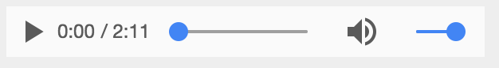
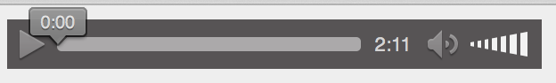

H2 - P2021
Développement web
Cours 04
- github : https://github.com/brunosimon/hetic-p2021
- site : http://bruno-simon.com/hetic/p2021/
- contact : bruno.simon@hetic.net
HTML5
Audio / Video
APIs HTML5 permettant de lire des fichiers audio et vidéo directement dans la page à travers les balises <audio> et <video> sans utiliser Flash
Audio
Exemples
<audio src="audio.mp3"></audio>
Message de fallback pour les visiteurs dont le navigateur ne supporte pas l'audio
<audio src="audio.mp3">
Your browser doesn't support video API
</audio>
Attributs
- src Fichier source
- controls Affiche un controlleur (propre au navigateur)
- autoplay Lance la lecture dès que le fichier suffisamment chargé
- loop Recommence la lecture à la fin
- preload Choix du buffering (auto / metadata / none)
- muted Couper le son
Il est inutile d'indiquer une valeurs aux attributs qui n'en nécessitent pas
<audio
src="audio.mp3"
controls
autoplay
loop
muted
></audio>
Controllers
- Chrome
 - Firefox
 - Safari

Formats
Il est possible d'envoyer plusieurs formats et de laisser le navigateur choisir celui qu'il préfère
<audio autoplay="autoplay" loop="loop" controls="controls">
<source src="audio.mp3" type="audio/mp3" />
<source src="audio.ogg" type="audio/ogg" />
Your browser doesn't support audio API
</audio>
Compatibilité
Video
Comme l'API audio mais on remplace par video...
Exemples
Le plus simple
<video src="video.mp4"></video>
Message de fallback pour les visiteurs dont le navigateur ne supporte pas la vidéo
<video src="video.mp4">
Your browser doesn't support video API
</video>
Attributs
- src Fichier source
- controls Affiche un controlleur (propre au navigateur)
- autoplay Lance la lecture dès que le fichier suffisamment chargé
- loop Recommence la lecture à la fin
- preload Choix du buffering (auto / metadata / none)
- muted Couper le son
- width Largeur du player
- height Hauteur du player
- poster Lien de l'image de presentation de la vidéo
Il est inutile d'indiquer une valeurs aux attributs qui n'en nécessitent pas
<video
src="video.mp4"
poster="image.jpg"
controls
autoplay
loop
muted
width="800"
height="600"
></video>
Formats
Il est possible d'envoyer plusieurs formats et de laisser le navigateur choisir celui qu'il préfère
<video autoplay="autoplay" loop="loop" controls="controls" width="800">
<source src="video.mp4" type="video/mp4" />
<source src="video.webm" type="video/webm" />
<source src="video.ogv" type="video/ogg" />
Your browser doesn't support video API
</video>
Convertir ses vidéos
- Miro Video Converter Simple et efficace (Mac et Windows)
- HandBrake Plus complexe (Mac, Windows et Linux)
Compatibilité
Manipuler en Javascript
Avant tout, il faut récupérer l'élément et le sauvegarder dans une variable.
// Assume we have only one <video> in the page
const video = document.querySelector('video')
Une fois récupéré, on va pouvoir utiliser ses méthodes et modifier ses propriétés
En JS orienté objet, les objets fonctionnent avec des méthodes, des propriétés et des événements.
Prenons en exemple un humain.
-
Méthodes : marche, cours, saute
Ce sont des actions qu'on peut lui faire faire -
Propriétés : âge, hauteur, poids
Ce sont des informations qu'on peut récupérer et modifier -
Événements : se réveil, s'endort, anniversaire
Ce sont des événements qu'on peut écouter
Les objets audio et video fonctionnent de la même manière
Méthodes
- play()
- pause()
video.play()
video.pause()
Propriétés
- controls
- loop
- autoplay
- volume
- currentTime
- duration
- muted
- ...
console.log(video.volume)
video.volume += 0.1
Événements
- play
- pause
- playing
- seeking
- canplay
- canplaythrough
- progress
- ...
video.addEventListener('play', (event) =>
{
console.log('playing')
})
Méthodes / Propriétés / Événements
Liste complète : http://www.w3schools.com/tags/ref_av_dom.asp
Exemples
Écouter l'événement "click" sur un bouton pour augmenter le volume sans dépasser la limite
<video src="#"></video>
<button class="volume-up">+</button>
// Retrieve elements
const video = document.querySelector('video')
const volumeUp = document.querySelector('.volume-up')
// Listen to click event on button
volumeUp.addEventListener('click', () =>
{
// Test if volume above 1
if(video.volume + 0.1 > 1)
{
video.volume = 1
}
else
{
video.volume += 0.1
}
})
Exemples
Écouter l'événement "click" sur une div pour changer la position de la lecture
(CSS non inclus)
<video src="#"></video>
// Retrieve elements
const video = document.querySelector('video')
const bar = document.querySelector('.bar')
// Listen to click event on button
bar.addEventListener('click', (event) =>
{
// Calculate video time using cursor position and bar width
const ratio = (event.clientX - bar.offsetLeft) / bar.offsetWidth
const current = video.duration * ratio
// Update video time
video.currentTime = current
})
Exemples
Mettre à jour le curseur d'une barre en fonction de l'avancement dans la vidéo
(CSS non inclus)
<video src="#"></video>
// Retrieve elements
const video = document.querySelector('video')
const bar = document.querySelector('.bar')
const cursor = document.querySelector('.cursor')
// Execute fonction every 50ms
window.setInterval(() =>
{
// Calculate video time ratio
const ratio = video.currentTime / video.duration
// Update cursor scale
cursor.style.transform = `scaleX(${ratio})`
}, 50)